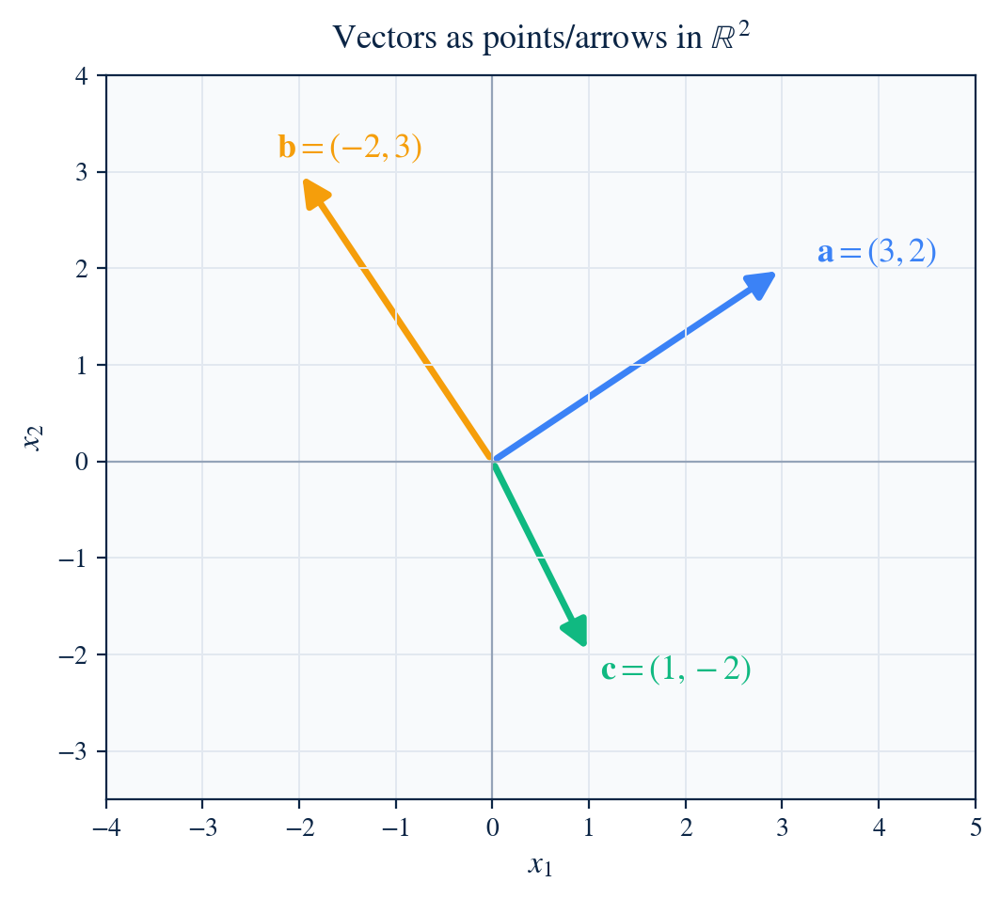
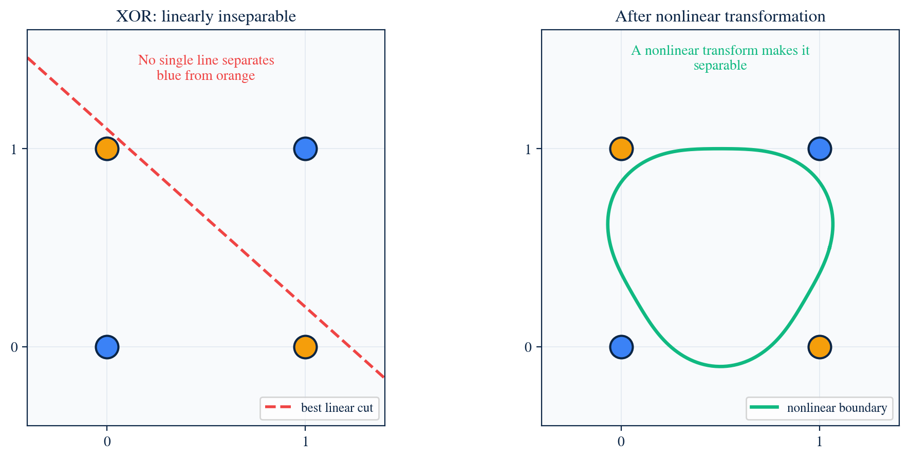
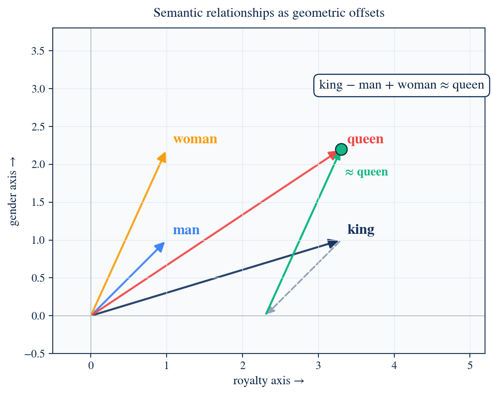
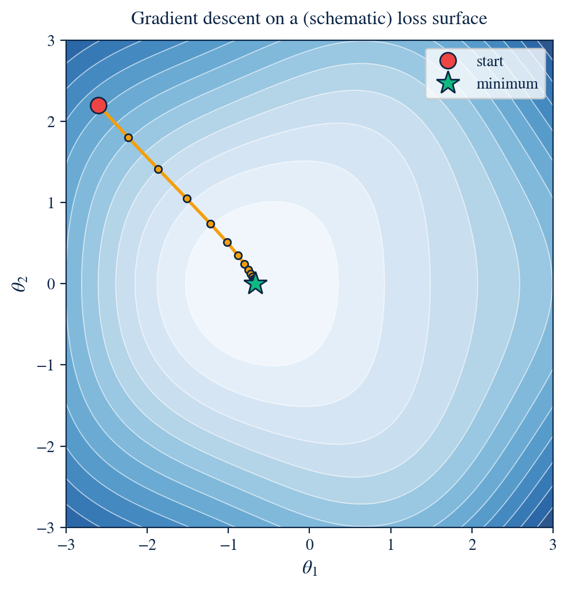
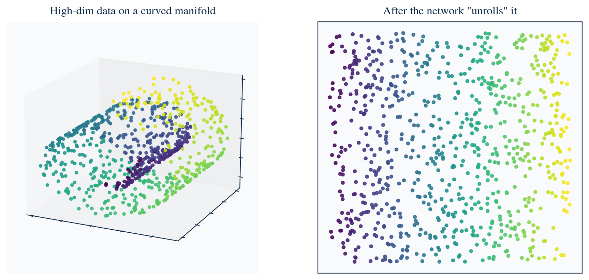
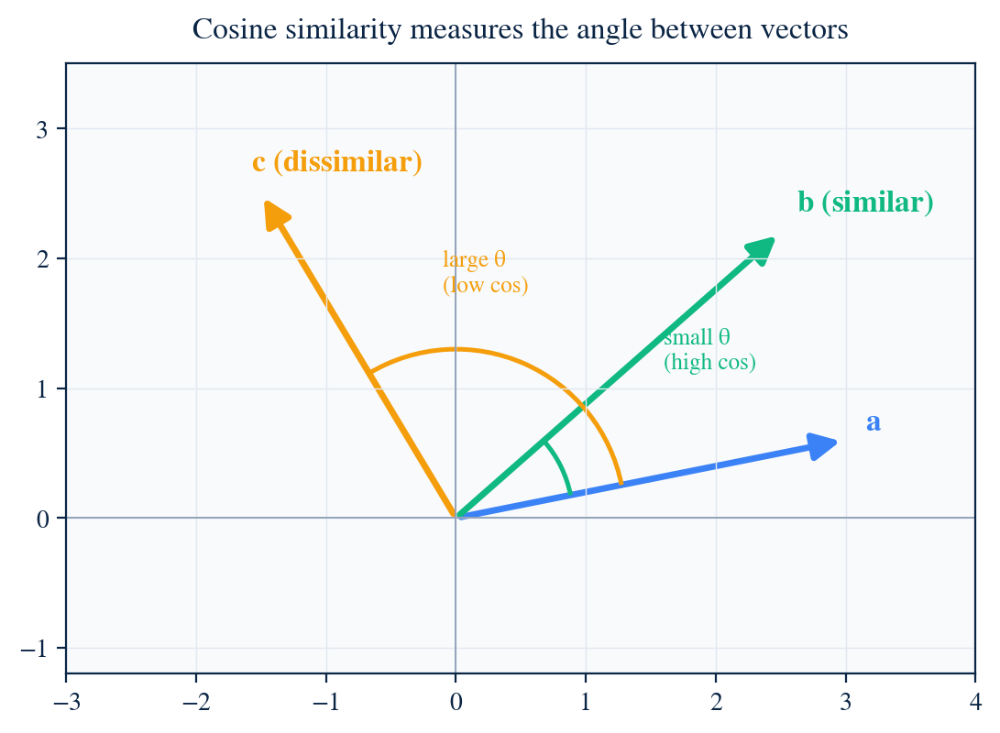
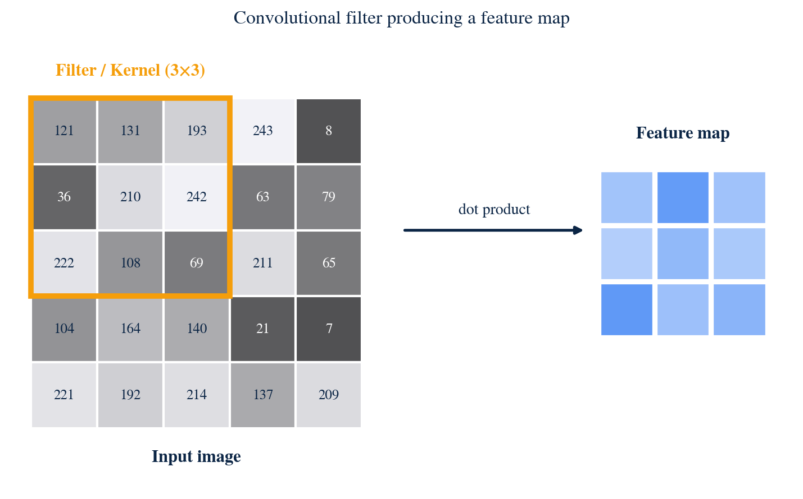
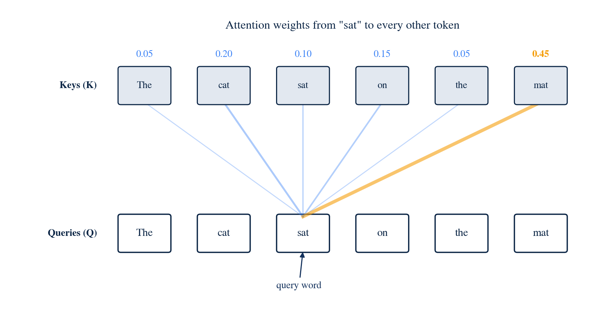
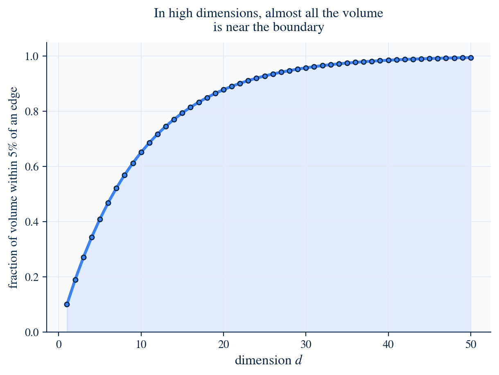

The geometric core — vectors as the fundamental language of artificial neural networks.
AI's evolution from rule-based symbolic systems to deep learning rests on a single, often invisible, mathematical object — the vector.
“In high-dimensional geometry, intelligence is not a program — it is a position.”

Rosenblatt's 1958 Perceptron treated a single neuron as a line cutting space in two — a linear classifier living on a vector space.
The AI Winter (1970s) arrived when researchers proved that a single linear cut cannot separate the XOR classes — the insight that eventually birthed multi-layer, "Deep" networks.

Before a network can think, the world must become numbers.
A 256 × 256 grayscale image is a single point in 65,536-dimensional space. The network learns regions where "cat" lives, distinct from "dog".
Words become 768- or 1024-dimensional embeddings; meaning becomes direction.

The dot product measures alignment — how much $\mathbf{x}$ projects onto the stored pattern $\mathbf{w}$.
The gradient is itself a vector pointing uphill; we step against it, again and again.

Pixels live in millions of dimensions, but the set of natural images forms a thin curved surface inside that volume.
“Activation functions warp the page; deep networks crumple paper until the dots fall apart.”

That near-90° property is what lets a single network store vast amounts of information without interference — unrelated concepts simply don't see one another.
Small angle → high similarity. Right angle → no relationship at all.

The input is no longer a 1-D vector but a 3-D tensor (width × height × channels). The weight vector becomes a kernel — a tiny template that produces a localized dot product at every spatial position.

Every token projects itself three ways:
The result is a dynamic embedding — a word's vector shifts position depending on the rest of the sentence.

Traditional databases match keywords. Vector databases embed every document as a point and answer queries by nearest-neighbour search in that space.
“Geometry replaces grep — proximity becomes relevance.”
As the number of dimensions grows, the volume of space explodes. Data becomes sparse; pairwise distances concentrate; "nearness" loses meaning.
Networks must therefore be carefully regularized — through layer normalization, weight decay, and dropout — so their representations remain stable.

If a vector grows too large, activation functions saturate, gradients vanish, learning stops. Constraining vectors to a unit sphere forces the network to focus on where the vector points, not how loud it shouts.
The vector is the silent engine of the AI revolution — the bridge between silicon and the analogue mess of human experience.
We are entering an era of multimodal spaces, where the vector for a picture of a dog and the vector for the word "dog" sit at almost the same point in a single shared space.
“The quest for general AI is, in many ways, the quest for a master vector space — one geometry for every concept a human can hold.”
Mathematics in Artificial Intelligence — The Geometric Core. Vectors as the fundamental language of artificial neural networks.
Supervised by Prof. Azhar Malik · Academic Year 2025–2026